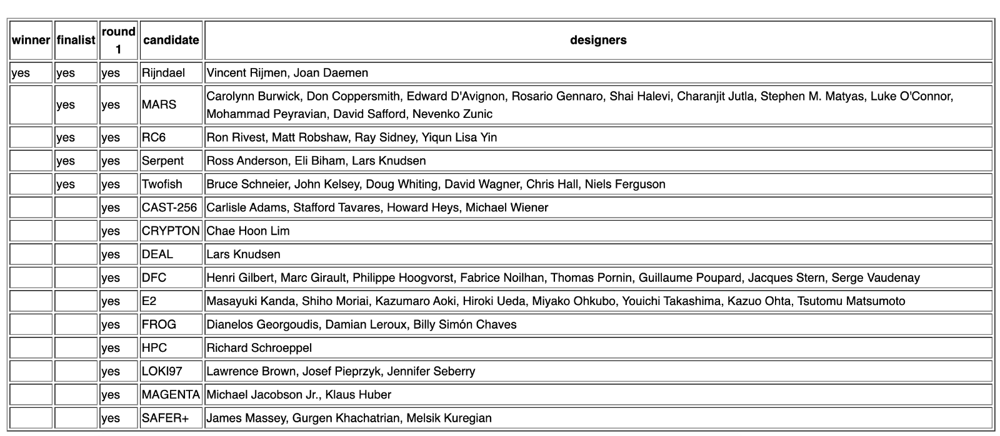
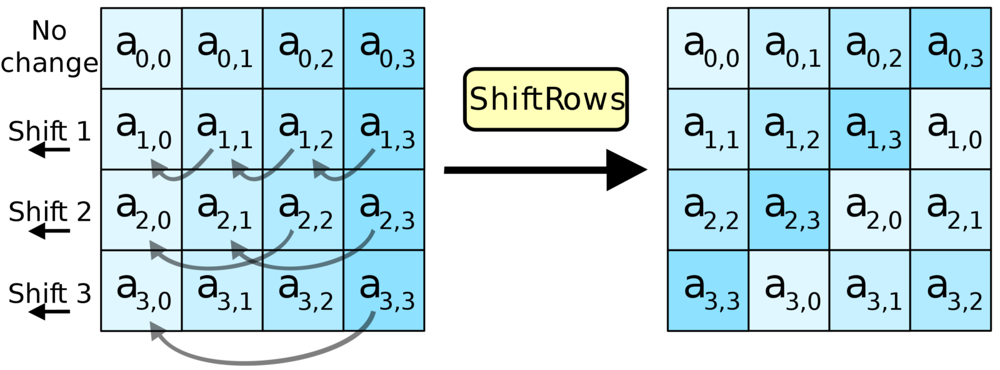

SP c'est pour Substitution / Permutation
Enigma fait de la substitution. Elle a un niveau de substitution de 1 pour 1. A chaque rotation de rouage dans la machine, une lettre = une autre lettre.
Ce qui signifie que si je souhaite décoder un caractère, je n'ai qu'à me concentrer sur la paire, c'est à dire à quel caractère est il associé.Une fois décodé, il est éliminé des possibilités pour les caractères suivants.
MD4, MD5, SHA0 et SHA1 vont utiliser ce processus, mais aussi y ajouter d'autres opérations mathématiques pour complexifier le résultat. On va y retrouver du décalage de bits de modulo \(2^32\), XOR, AND, OR et NOT. Malgré toute, avec cette méthode il reste possible de créer des fichiers différents, mais avec la même signature.
Alors on va encore ajouter de la confusion.
On va exécuter une permutation. Plutôt que de remplacer les valeurs, on va mélanger les positions. Attention, comme pour l'étape précédente, ce n'est pas aléatoire, ce sont des valeurs prédéfinies. Il faut pouvoir revenir déchiffrer.
La manière dont ça fonctionne est la suivante:
Dans un premier temps, nous allons découper la chaine à encoder en bloc d'une certaine taille. Si le dernier ou seul bloc est plus petit, on va l'étendre.
Chaque bloc est passé dans une s-box, ou substitution box. Son but est de d'inter-changer une valeur par une autre à partir d'une matrice prédéfinie.
On rassemble les blocs de valeurs à nouveau. Cela veut déjà dire moins de choses. Puis la valeur va être soumise au sein d'une p-box, ou permutation box. On ne remplace pas les valeurs, on les déplace dans la chaine.
[101101][110011]
[sbox][sbox]
[110011][101011]
[---pbox---]
[101011][110011]
Si on s'arrête là, on ne fait un peu mieux, mais pas beaucoup mieux que Enigma, alors on va utiliser une clé, un hash, que l'on va diviser en 3 blocs, 1 pour chaque étape, puis mixer ce bloc avec le message grâce à un XOR entre chaque étape, et répéter toutes les étapes un certain nombre de fois, 10x, 80x. Le nombre de tours à faire va dépendre de l'efficacité d'un tour. Donc des substitutions et permutations. AES par exemple lui fait entre 10 et 14 tours. En deçà, on perd en sécurité et au-delà on perd en rapidité. Pour encoder un mot de passe, on préfèrera la sécurité à la rapidité. Pour encoder des échanges on favorisera la rapidité sans qu'elle soit on dépit de la sécurité.
Et quand on parle de SP Network impossible de ne pas citer celui qui protège probablement +70% du web. Rijndael.
Suite à l'insuffisance du prédécesseur DES, et DES3, le NIST (National Institute of Standards and Technology) à ouvert une compétition afin de proposer un algorithme capable de surpasser l'existant et de l'utiliser en tant que Advanced Encryption Standard.
Il y a eu plusieurs compétiteurs. Certains étaient plus robustes, mais plus lents. D'autres étaient plus rapides, mais moins robustes. Sachant qu'il s'agissait d'établir un moyen de communiquer sur internet, il faut que ça aille vite, mais pas au détriment de la sécurité.
Parmi les critères on retrouvera également, la consommation de mémoire, l'adaptabilité dans le temps, simplicité etc…

Le gagnant est l'algorithme Rijndael, créé par 2 Belges Vincent Rijmen et Joan Daemen.
Voyons pourquoi Rijndael a été sélectionné.
Il reçoit un texte d'une longueur de 128 bits, il retournera une chaine chiffrée de 128bits. Une clé sera utilisée pour le chiffrement, cette clé sera de 128, 192 ou 256 bits. On a donc une clé très longue, voire même extrêmement longue…
128 :
2a0a5f2e922599e0192508b03b97799479d26012ae1d8b1ad84023a8ac1f4fa740492d9fb91c3f29071c959a4914ce55e1dca06209e7fc90e21a45205a51240b00a8cc74351b0b9a028667e64d358cfc876c5708252929183d21120c16684af75020350cd018c8bda5520213bb4a72090cf000dedfc2f40a4dc99352ad0ed63b
94e5c820930640f96349e7bad731b4e6023d150513c28adf86addef93a8f3e760b6c1ff3e406d4583d7e70d99dbcc66f6b37b1fbd4c3807781a693519f5b998c056b123f955f15b671d14c4094452a98f191a064917c36940a6fd255e4ed4caab3290dee3971aa0b7d01ba6362af5310fd354d94ef66bbfe7452d72e81fd270a8064ac5e0a0d3e36f76bacb8bcbb87685bb35a8b2792f8f00fdb13aa7cb87464db03f7b45cfdc1b85230d9c8caa4a9dac8dfd8de47c02758eb3559a80994e1d861b5d2da4abcdbe47e65e55f612e003b1adbb3fea03f4bebde169715fbe786b0c6a5eb8aecc83833ac8863e54d4483a2dea67aabea00ad0eeccdc7139cb78feb
Rijndael est conçu comme un sp-network.
Il va donc réaliser des substitutions pour amener de la confusion et des permutations pour amener de la diffusion.
Partons de 128 bits. Plutôt que de travailler sur une longue chaîne de caractère, AES manipule les données sous forme d'une matrice. une grille de 4x4. Il va donc découper par blocs de 16bytes.
[b01,b05,b09,b13]
[b02,b06,b10,b14]
[b03,b07,b11,b15]
[b04,b08,b12,b16]
Nous avons en premier l'ajout d'une partie de notre clé via une opération binaire, XOR. Ce découpage de notre clé et cet ajout entre chaque opération sont ce qui nous permet de rendre le tout secret. Puisque tout le reste de l'algorithme est publique.
Ensuite nous exécutons les opérations suivantes substitution de bits, [décalage de bit, mélange de colonne](permutation), et ajout de la clé via XOR. Cette suite d'opérations est un "round", un tour si vous voulez.
Avec une clé de 128bits, il faut effectuer 10 rounds pour tout chiffrer.
Avec une clé de 192bits, il faut effectuer 12 rounds.
Avec une clé de 256bits, il faut effectuer 14 rounds.
La clé va être divisée en autant de morceaux qu'il est nécessaire.
AES utilise un "key schedule". C'est un algorithme qui calcule chaque round key à partir de la clé.
La première étape, la substitution, est une opération qui résultera en une valeur située dans un champ de Galois de \(2^8\), c'est-à-dire qu'elle sera située entre \(00000000\) et \(11111111\).
Cette valeur est calculée dans une lookup table définie dans l'implémentation de l'algorithme.
Cette lookup table est un ensemble de fonctions mathématiques s'assurant qu'un élément via le biais du hasard ne retombe jamais sur lui même ainsi que 2 éléments n'échangent pas leur place entre eux, et qu'il soit possible (via des fonctions inverses) de revenir à l'état initial. Puisque c'est une lookup Table, c'est rapide.
La seconde étape, le décalage de bytes. Dans notre matrice chaque ligne est décalée d'un rang vers la gauche (sauf la première ligne). Cette étape permet de garantir que les ensembles de valeurs ne soient pas encodées de manière indépendante, et ne pas former des sous ensemble de chaines courtes, et donc plus facile à décoder.

La dernière étape d'un round est le mélange des colonnes.
Puisqu'on va répéter les 3 opérations, elle permet d'ajouter encore plus de confusion lors des prochaines exécutions. Cependant, cette étape n'est pas réalisée au dernier round, puisque de toute manière elle n'ajoute aucune variation des données. Le mélange est en réalité une multiplication matricielle qui résultera là aussi dans une valeur située dans un champ de Galois de \(2^8\).
(pour les matheux qui se demandent comment une multiplication de 2 grandes valeurs pourraient ne pas sortir du champs imposé, c'est parce que la valeur est multipliée modulo un polynomial)
Et ici aussi, on utilisera des fonctions qui possèdent leur inverse.
Avec cette construction, on ne sort jamais du champ des possibles sur 128bits, et chaque opération est réversible.
Alors bien sûr ces étapes sont cruciales et si l'implémentation n'est pas rigoureuse, des morceaux de clés pourraient fuiter. Mais, heureusement pour nous, puisque c'est un standard, c'est à présent directement encodé dans les CPU, et de manière précautionneuse.
C'est presque impossible à pirater, et extrêmement rapide.
C'est d'ailleurs pour ça qu'on a eu des virus qui verrouillent votre système, grâce a AES, il est capable d'encoder 10Gb/s. Le temps de s'en rendre compte, c'est trop tard.
En résumé
Pour sécuriser vos échanges, TLS combine les capacités de RSA, Diffie-Hellmann et AES.
Merci de m'avoir lu :)
Greg.